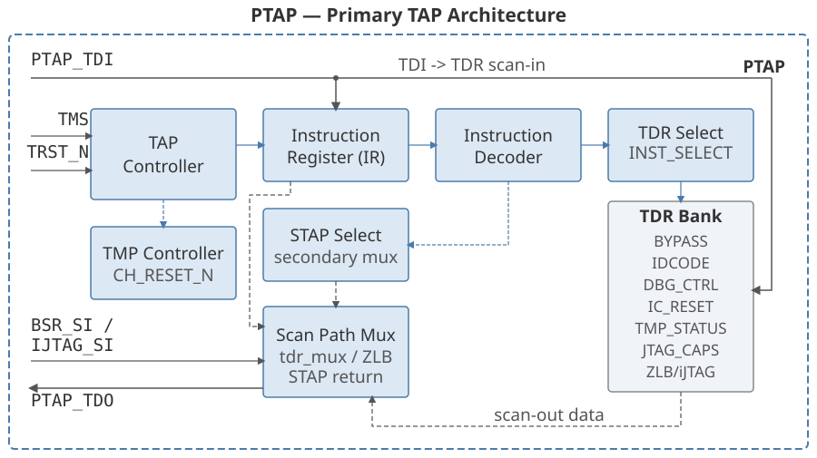
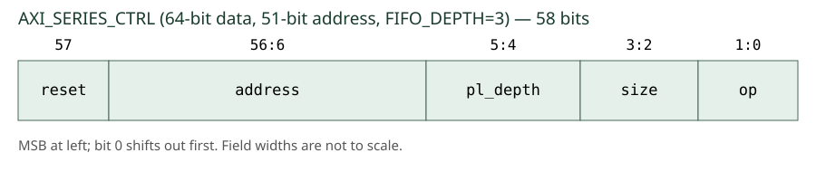
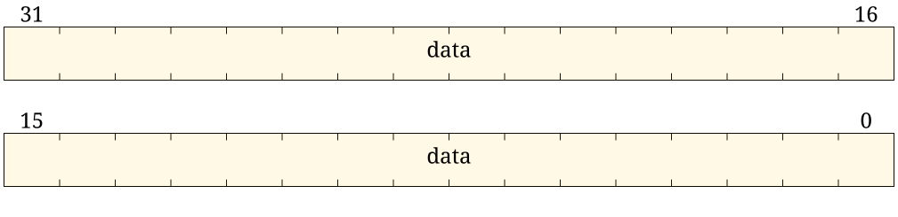

JTAG PTAP
The Primary TAP (PTAP) is the main JTAG access point for the chiplet. It implements IEEE 1149.1-2013 with extensions for IEEE 1687-2014 (iJTAG) and IEEE 1838-2019 (3DIC).
Overview
The PTAP provides:
-
Full IEEE 1149.1-2013 TAP controller with 16-state FSM and one-hot encoding.
-
Test Data Registers (TDRs) for all defined JTAG instructions.
-
Test Mode Persistence (TMP) support — gates JTAG clock stop and test assertion across a configurable list of reset conditions.
-
Boundary scan with scan ports and control signals.
-
BIST support via the RUNBIST instruction.
-
3DIC support (TAP_3DCR) for STAP selection over a JTAG scan chain.
-
iJTAG SIB-based network access.
-
JTAG2AXI debug bridges for SMC fabric, SMC OTP and SEP OTP.
Configuration Parameters
| Parameter | Type | Default | Description |
|---|---|---|---|
Feature enable parameters |
|||
|
bit |
1 |
Enable all mandatory IEEE 1149.1 boundary scan instructions. |
|
bit |
1 |
Enable optional EXTEST_TRAIN instruction. |
|
bit |
1 |
Enable optional EXTEST_PULSE instruction. |
|
bit |
1 |
Enable optional INTEST instruction. |
|
bit |
1 |
Enable optional CLAMP instruction. |
|
bit |
1 |
Enable optional HIGHZ instruction. |
|
bit |
1 |
Enable optional RUNBIST instruction. |
|
bit |
1 |
Enable TMP controller and associated instructions. |
|
bit |
0 |
Enable SMC slice of the IC_RESET TDR. |
|
bit |
0 |
Enable SEP slice of the IC_RESET TDR. |
|
bit |
0 |
Enable external slice of the IC_RESET TDR. |
|
bit |
1 |
Enable JTAG2AXI ports for SMC debug. |
|
bit |
1 |
Enable STAP for SEP debug. |
|
bit |
1 |
Enable STAP for chiplet-to-chiplet connectivity. |
IC_RESET struct type parameters |
|||
|
type |
|
Packed struct for the SMC IC_RESET slice. Must contain |
|
type |
|
Packed struct for the SEP IC_RESET slice. |
|
type |
|
Packed struct for the external IC_RESET slice. |
Size parameters |
|||
|
int |
0 |
Number of additional STAPs for local connectivity. |
|
int |
8 |
Number of cross-trigger ports. |
|
int |
1 |
Number of internal cross triggers. |
IDCODE parameters |
|||
|
logic[10:0] |
|
JEDEC manufacturer ID. |
|
logic[15:0] |
|
Chiplet model ID. |
|
logic[3:0] |
|
Silicon revision. |
Version parameter |
|||
|
logic[7:0] |
|
DTP IP major version number, reflected in JTAG_CAPS. |
AXI pipeline depth parameters |
|||
|
logic[1:0] |
|
SMC OTP read pipeline depth (0 = single outstanding). |
|
logic[1:0] |
|
SMC OTP write pipeline depth. |
|
logic[1:0] |
|
SEP OTP read pipeline depth. |
|
logic[1:0] |
|
SEP OTP write pipeline depth. |
|
logic[1:0] |
|
SMC fabric read pipeline depth. |
|
logic[1:0] |
|
SMC fabric write pipeline depth. |
Architecture
The PTAP is fully compliant with the IEEE JTAG specifications. It implements a modular design with a core TAP controller, dedicated register modules for each instruction type, and optional AXI bridge modules for debug access. The architecture supports Test Mode Persistence (TMP), boundary scan with dedicated scan ports and control signals, BIST functionality, and 3DIC support with STAP scan ports and control signals derived from internal TDRs.

Blue arrows show TAP Controller control signals (Capture/Shift/Update) and
decoded instruction/selection signals from the Instruction Decoder.
Grey arrows show scan-data paths: solid grey carries PTAP_TDI scan-in (fanning
out directly to IR, all TDR scan-in inputs, BSR_SI, and IJTAG_SI); dashed
grey carries scan-out returns — the selected IR or TDR scan-out is chosen by the
Scan Path Mux and forwarded to PTAP_TDO (retimed on falling TCK edge; zero-length
bypass uses the ZLB path, which bypasses the retimer).
The TDR Bank registers (BYPASS, IDCODE, DBG_CTRL, and others) are listed in
the Module Hierarchy table below.
BSR_SI/IJTAG_SI scan-in arrives directly from PTAP_TDI fan-out;
BSR_SO/IJTAG_SO scan-out returns are selected by the Scan Path Mux.
Module Hierarchy
The PTAP implementation instantiates the following submodules:
| Module | Purpose | Conditional |
|---|---|---|
|
IEEE 1149.1 TAP controller FSM (16 states, one-hot encoded) |
Always instantiated |
|
6-bit instruction register with 64-wide one-hot decoded output |
Always instantiated |
|
1-bit bypass register (BYPASS instruction) |
Always instantiated |
|
1-bit inverted bypass register (INV_BYPASS instruction) |
Always instantiated |
|
32-bit IDCODE register |
Always instantiated |
|
2-bit 3D Control Register for STAP control |
When |
|
Test Mode Persistence controller |
When |
|
2-bit TMP status register |
When |
|
IC_RESET control register (2*(NUM_SMC_IC_RESET+NUM_SEP_IC_RESET+NUM_EXT_IC_RESET)+1 bits) |
When any of |
|
5-bit debug control register |
Always instantiated |
|
60-bit capabilities readback register |
Always instantiated |
|
JTAG-to-AXI-Lite bridge for SMC OTP controller |
When |
|
JTAG-to-AXI-Lite bridge for SEP OTP controller |
When |
|
JTAG-to-AXI bridge for SMC system fabric |
When |
TAP Controller State Machine
The TAP controller implements the IEEE 1149.1 16-state finite state machine using one-hot encoding. Each state is assigned a unique bit position within a 16-bit vector, enabling direct state detection via single-bit comparisons.
| State | Encoding | Description |
|---|---|---|
TEST_LOGIC_RESET |
16’h0001 |
State 0: Reset state, instruction register loads IDCODE |
RUN_TEST_IDLE |
16’h0002 |
State 1: Idle state between operations |
SELECT_DR_SCAN |
16’h0004 |
State 2: Select data register scan path |
CAPTURE_DR |
16’h0008 |
State 3: Capture data into selected DR |
SHIFT_DR |
16’h0010 |
State 4: Shift data through selected DR |
EXIT1_DR |
16’h0020 |
State 5: Exit from shift to either pause or update |
PAUSE_DR |
16’h0040 |
State 6: Pause DR shift operation |
EXIT2_DR |
16’h0080 |
State 7: Exit from pause back to shift or update |
UPDATE_DR |
16’h0100 |
State 8: Update DR from shift register |
SELECT_IR_SCAN |
16’h0200 |
State 9: Select instruction register scan path |
CAPTURE_IR |
16’h0400 |
State 10: Capture data into IR (fixed pattern 6’b000001) |
SHIFT_IR |
16’h0800 |
State 11: Shift data through IR |
EXIT1_IR |
16’h1000 |
State 12: Exit from shift to either pause or update |
PAUSE_IR |
16’h2000 |
State 13: Pause IR shift operation |
EXIT2_IR |
16’h4000 |
State 14: Exit from pause back to shift or update |
UPDATE_IR |
16’h8000 |
State 15: Update IR, decode new instruction |
The state machine includes an automatic fault recovery mechanism. A 3-bit TMS reset counter tracks consecutive TMS high assertions. When the counter reaches 5, the state machine automatically transitions to TEST_LOGIC_RESET regardless of current state, providing recovery from corrupted or invalid states.
Control signals are generated using a split approach. Update, run-test-idle, and test-logic-reset signals are generated combinationally as Moore machine outputs. Capture and shift signals are registered on the falling edge of TCK to ensure stable control windows before the rising edge samples data.
Reset Hierarchy
The PTAP employs a three-level reset hierarchy to support power-on initialization, JTAG reset, and conditional register preservation.
| Reset Signal | Source | Scope |
|---|---|---|
|
|
Primary reset for all JTAG logic, combines power-on and external TRST |
|
Derived from TAP FSM state (asserted when state == TEST_LOGIC_RESET) |
Resets instruction and data registers |
|
|
Channel reset for TMP-aware registers, preserves state when in persistence mode |
The primary reset jtag_trst_n is formed by AND-gating the power-on reset input
with the external TRST signal. This combined reset feeds all JTAG clock domain
logic. The TAP controller derives test_logic_reset from the FSM state, which
normally resets all registers. When Test Mode Persistence is enabled, the
conditional reset chrst_n allows boundary scan and configuration registers to
survive TEST_LOGIC_RESET state transitions while in persistence mode.
TDR Multiplexer
The PTAP implements a 41-case instruction-dependent data register multiplexer. During IR scan operations, the instruction register connects to the scan path. During DR scan operations, the appropriate data register is selected based on the currently decoded instruction. Each test data register has dedicated scan control logic that enables selection only when the corresponding instruction is active and the required feature is enabled.
The scan path supports zero-length bypass through explicit prim_stdmux2
multiplexer cells rather than behavioral multiplexing. This implementation
prevents glitches on scan path selectors during instruction transitions. The
zero-length bypass instruction connects TDI directly to TDO without intermediate
register stages, providing minimum scan latency for hierarchical JTAG chains.
STAP selection is implemented as a second-level multiplexer. When the 3DCR register’s select bit is asserted, the STAP chain input replaces the TDR multiplexer output. The STAP scan control signals are generated by OR-combining the instruction register and data register scan controls, enabling STAP operation during both IR and DR scan sequences as required by IEEE 1838.
TDO Retiming
The TDO output is retimed on the falling edge of TCK as required by IEEE 1149.1
Section 4.5.2. The retiming register ensures that TDO transitions occur at the
same clock edge that samples TDI at the receiving device, maintaining timing
margins across board-level JTAG chains. For zero-length bypass operation, the
retimer is bypassed using an explicit prim_stdmux2 cell to minimize scan
latency.
ID Code
The IDCODE instruction accesses a TDR containing device identification information.
| Bits | Field | Access | Description |
|---|---|---|---|
31:28 |
si_rev |
R |
Silicon revision |
27:12 |
part_num |
R |
Chiplet model ID |
11:1 |
mfr_id |
R |
JEDEC-assigned manufacturer ID, encoded into 11 bits |
0 |
marker |
R |
Marker bit, always 1 |
To access the IDCODE TDR:
-
Shift the IDCODE instruction into the instruction register using the IR-Scan sequence.
-
Shift any pattern into the IDCODE TDR on TDI using the DR-Scan sequence, starting with the least significant bit.
-
The bits shifted into the IDCODE TDR will be ignored. The contents of the IDCODE TDR will shift out on TDO.
Debug Control
The DEBUG_CONTROL instruction accesses a TDR defining general control bits for debug and control of the design.
| Bits | Field | Access | Reset | Description |
|---|---|---|---|---|
4 |
cla_clock_stop |
R |
0 |
When set, indicates that a CLA in the chiplet attempted to stop the clocks. Note that the clocks will actually have been stopped only when cla_clock_stop_en is set. |
3 |
jtag_clock_stop |
RW |
0 |
When set, stops all clocks in the chiplet. This is wired to the functional clock gaters on all of the PLLs in the chiplet. This bit is active high. |
2 |
cla_clock_stop_en |
RW |
0 |
When set, enables the CLAs to stop the clocks in the design. This bit indicates that an external debugger is connected and ready to do debug or scan dump operations after the CLA stops the clocks. This bit is intended to protect against unintentional CLA clock stops in the field due to incorrect CLA programming. This bit is active high. |
1 |
boot_stall_ovrd |
RW |
0 |
When set, overrides the boot stall signal to the internals of the part to use the value from boot_stall in this TDR instead. This bit is active high. |
0 |
boot_stall |
RW |
0 |
When boot_stall_override is set, the value in this bit is used for boot stall. This bit is active high: setting to 1 causes boot stall. |
To access the DEBUG_CONTROL TDR:
-
Shift the DEBUG_CONTROL instruction into the instruction register using the IR-Scan sequence.
-
Shift the desired data into the DEBUG_CONTROL TDR on TDI using the DR-Scan sequence, starting with the least significant bit.
-
R/W bits shifted into the IDCODE TDR will be captured by the TDR. RO bits will be ignored. The contents of the DEBUG_CONTROL TDR will shift out on TDO.
JTAG Capabilities
The JTAG_CAPS instruction accesses a read-only TDR reporting the DTP version number and general configuration parameters for the DTP.
| Bits | Field | Access | Description |
|---|---|---|---|
59:54 |
num_xtrig_int_ct |
R |
The number of internal cross trigger signals. |
53:48 |
num_xtrig_ctp |
R |
The number of Cross Trigger Ports. |
47:44 |
num_xtra_stap |
R |
The number of additional DTP STAP interfaces. |
43 |
stap_io_en |
R |
The STAP interface for chiplet-to-chiplet connectivity is enabled. |
42 |
sep_dbg_en |
R |
The SEP STAP interface enabled. |
41 |
smc_dbg_en |
R |
The SMC JTAG2AXI interface is enabled. |
40:33 |
num_smc_ic_rst |
R |
The number of SMC IC_RESET override ports. |
32:25 |
num_sep_ic_rst |
R |
The number of SEP IC_RESET override ports. |
24:17 |
num_ext_ic_rst |
R |
The number of external IC_RESET override ports. |
16 |
ic_rst_inst_en |
R |
The IC_RESET instruction is enabled. |
15 |
tmp_inst_en |
R |
The TMP controller functionality and instructions are enabled. |
14 |
runbist_inst_en |
R |
The RUNBIST instruction is enabled. |
13 |
highz_inst_en |
R |
The HIGHZ instruction is enabled. |
12 |
clamp_inst_en |
R |
The CLAMP instruction is enabled. |
11 |
intest_inst_en |
R |
The INTEST instruction is enabled. |
10 |
extest_pulse_en |
R |
The EXTEST_PULSE instruction is enabled. |
9 |
extest_train_en |
R |
The EXTEST_TRAIN instruction is enabled. |
8 |
bsr_inst_en |
R |
All mandatory boundary scan instructions are enabled. |
7:0 |
och_ver |
R |
The MAJOR version number of the DTP IP. |
To access the JTAG_CAPS TDR:
-
Shift the JTAG_CAPS instruction into the instruction register using the IR-Scan sequence.
-
Shift any pattern into the JTAG_CAPS TDR on TDI using the DR-Scan sequence, starting with the least significant bit.
-
The bits shifted into the JTAG_CAPS TDR will be ignored. The contents of the JTAG_CAPS TDR will shift out on TDO.
Boundary Scan Support
All boundary scan and BIST instructions defined in IEEE 1149.1 are optionally supported, but support is not enabled by default. RTL parameters are provided to selectively enable support for each instruction. Any disabled instruction has the same behavior as the BYPASS instruction.
To access the boundary scan registers:
-
Shift any boundary scan instruction that selects the BSRs into the instruction register using the IR-Scan sequence.
-
Shift any pattern into the BSRs on TDI using the DR-Scan sequence, starting with the least significant bit.
-
The contents of the BSRs will shift out on TDO.
BIST Support
The RUNBIST instruction is optionally supported, but support is not enabled by default. An RTL parameter is provided to selectively enable support. Any disabled instruction has the same behavior as the BYPASS instruction.
When the RUNBIST instruction is selected, the iJTAG network is selected as the active scan chain. An iJTAG network control signal indicates that the RUNBIST instruction is active. A designer may also utilize the decoded INST_SELECT signal to trigger the BIST logic for any instructions that they have enabled.
To execute BIST and access the BIST TDR:
-
Shift the RUNBIST instruction into the instruction register using the IR-Scan sequence.
-
Shift 2’b01 into TDI using the DR-Scan sequence to enable the SIB for the external iJTAG interface, starting with the least significant bit.
-
Shift {2’b01, BIST_TDR} into TDI using the DR-Scan sequence to access the BIST TDR, starting with the least significant bit. The BIST_TDR sequence is defined by the user’s implementation of the extended iJTAG network. Multiple sequences may be required to configure the external iJTAG network to access the BIST TDR.
-
The contents of the BIST_TDR will shift out on TDO as {2’b01, BIST_TDR}.
Test Mode Persistence (TMP) Support
There is optional support for TMP, but support for TMP is disabled by default. An RTL parameter enables support for TMP.
When TMP support is enabled, a TMP controller is included in the PTAP. The TMP controller manages the active-low CH_RESET_N signal. The CH_RESET_N signal is the reset signal for any registers that must retain their state across TLR soft resets, mainly the boundary scan cells. CH_RESET_N asserts whenever the TAP is in the TLR state except when the TMP controller is in the PERSISTENCE_ON state. When the TMP controller is in the PERSISTENCE_ON state, the only events that will assert CH_RESET_N are full power-on-reset (POR) or TRST signal assertion.
When TMP support is disabled, the CLAMP_HOLD, CLAMP_RELEASE, and TMP_STATUS instructions have the same behavior as the BYPASS instruction, and the CH_RESET_N signal always responds to every POR, TRST, or TLR event, i.e. it is an exact copy of the RESET_N signal.
| Bit | Reset | Description |
|---|---|---|
Bypass Escape |
1 |
Whenever this bit is set, the TMP controller will transition to the PERSISTENCE_OFF state when the TAP controller enters the UPDATE_IR state after the BYPASS instruction has been selected. |
TMP Status |
0 |
This bit is set when the TMP controller is in the Persistence-On state. |
3DIC Support
There is optional support for STAP interfaces, and support is enabled by default. An RTL parameter selects the number of STAP interfaces, where a value of 0 disables STAP support.
In order to properly support the IEEE 1838 standard, a chain of STAP interfaces must be inserted at the end of each chiplet’s scan chain. This is done after the IR Select MUX to ensure that both the instruction registers and TDRs from all enabled PTAPs in the scan chain are scannable. As a consequence, the STAPs require dedicated capture, shift, and update control signals that are triggered during both the IR and DR sequences.
The PTAP has a 2-bit 3DCR register that is accessed with the TAP_3DCR instruction. This register provides an option to bypass all STAPs in the scan chain.
| Bit | Reset | Description |
|---|---|---|
Config Hold |
0 |
When this bit is set, the PTAP TLR state does not reset this TDR, and it will hold its current state until TRST is asserted. |
Select |
0 |
When this bit is unset, the PTAP’s top-level STAP scan interface is completely bypassed. |
When STAP support is disabled, the TAP_3DCR instruction has the same behavior as the BYPASS instruction, and the STAP scan chain cannot be selected.
IC_RESET Support
The PTAP provides support for a configurable number of IEEE 1149.1-compliant reset controls. The IC_RESET TDR is composed of three independently-enabled slices:
-
SMC slice (nearest TDI): driven by the
ic_reset_smc_tstruct type and gated byIC_RESET_SMC_ENABLE. Sized from$bits(ic_reset_smc_t). -
SEP slice: driven by the
ic_reset_sep_tstruct type and gated byIC_RESET_SEP_ENABLE. Sized from$bits(ic_reset_sep_t). -
External slice (nearest TDO): driven by the
ic_reset_ext_tstruct type and gated byIC_RESET_EXT_ENABLE. Sized from$bits(ic_reset_ext_t). The instantiator supplies this type; the PTAP does not name the external ports.
Each slice’s struct must contain .ovrd and .val sub-structs of identical
width (checked via an elaboration-time assertion in jtag_ptap). Within
jtag_ic_reset_reg, the override-enable and control bits remain interleaved as
{enable, control} pairs per the JTAG specification; jtag_ptap packs the
three struct slices into that interleaved bus and unpacks the outputs back into
structured form. The TDR carries the SMC slice closest to TDI, then SEP, then
the external slice, followed by the single reset_hold bit.
The total length is 2 * (NUM_SMC_IC_RESET + NUM_SEP_IC_RESET bits, where each
NUM_EXT_IC_RESET) + 1NUM_*_IC_RESET is half the width of
its corresponding struct type when the matching enable parameter is set
(otherwise 0).
The TDR has the following structure:
| Bits | Field | Access | Reset | Description |
|---|---|---|---|---|
2*n+2 |
reset_control |
RW |
1 |
The controlled, active-low reset value driven while reset_enable is 0 (i.e. while JTAG override is active). |
2*n+1 |
reset_enable |
RW |
1 |
Active-LOW per IEEE 1149.1 §17: 1 (default) ⇒ JTAG override DISABLED (upstream reset passes through); 0 ⇒ JTAG override ENABLED (the port is driven by reset_control). The "enable" in the IEEE name refers to "enabling the controlled reset state", not the override mechanism. |
0 |
reset_hold |
RW |
1 |
When 0, TLR will not reset the reset_enable and reset_control bits. TRST/POR will always reset all bits. |
|
Polarity convention — the TDR field names come from the IEEE 1149.1 §17
specification and use an active-low |
For each of the resets defined in the TDR, the PTAP exposes two logical signals
(grouped into the per-slice jtag_*_reset_ctrl_t structs):
-
ic_reset_ovrd /
.ovrd- Active-high JTAG-override flag (the bit-wise inversion of reset_enable). 1 ⇒ JTAG is driving this reset, 0 ⇒ upstream reset passes through. -
ic_reset_ctrl_n /
.val- Active-low reset value driven when ic_reset_ovrd is asserted (identical to the reset_control TDR bit).
iJTAG Support
The PTAP has optional support for a IEEE 1687-2014-compliant hierarchical iJTAG network, and support is enabled by default. When the SELECT_IJTAG instruction is enabled, the iJTAG network is selected for scan.
JTAG2AXI Support
*_JTAG2AXI_CAPS
This is a private instruction that accesses a read-only TDR reporting the configuration parameters for the given JTAG2AXI debugging instrument.
| Bits | Field | Access | Description |
|---|---|---|---|
13:12 |
rd_pl_depth |
R |
The depth of the transaction read queue where 0 indicates only a single outstanding transaction allowed at any given time. |
11:10 |
wr_pl_depth |
R |
The depth of the transaction write queue where 0 indicates only a single outstanding transaction allowed at any given time. |
9:7 |
data_size |
R |
The size of AxDATA in powers-of-2 bytes. 0: 1 byte (8 bits) 1: 2 bytes (16 bits) 2: 4 bytes (32 bits) 3: 8 bytes (64 bits) 4: 16 bytes (128 bits) 5: 32 bytes (256 bits) 6: 64 bytes (512 bits) 7: 128 bytes (1024 bits) |
6:1 |
addr_size |
R |
The size of AxADDR in bits. |
0 |
bus_type |
R |
The type of the AXI bus. 0: AXI4 1: AXI4-Lite |
*_AXI_SINGLE_OP
This is a private instruction that generates a single AXI read or write transaction. It provides a mechanism for an external debugger to do sparse reads or writes to nearly any register in the design. Since the entire address must be shifted in for each transaction, this instruction is most useful for sparse accesses. This instruction uses semantics very similar to the RISC-V DTM DMI instruction.

| Bits | Field | Access | Reset | Description |
|---|---|---|---|---|
(…) +: addr_size |
address |
RW |
0 |
Address used for AXI access. In Update-DR the AXI transaction is issued. On a Capture-DR, this field holds the previous value. |
(…) +: 8*(2**data_size) |
data |
RW |
0 |
The data to write on an AXI write during Update-DR. On a Capture-DR, this field contains the data returned from an AXI read if the previous operation was a read, or holds the write data previously used if the previous operation was a write. |
5 +: (2**data_size) |
wstrb |
RW |
0 |
The byte strobes for a write transaction. This value is driven on WSTRB[7:0] when the transaction is a write. On a Capture-DR, this field holds the previous value. |
(…) +: $bits(size) |
size |
RW |
0 |
The number of bytes to read/write. This field is used as AxSIZE for the transaction. 0: 1 byte (8 bits) 1: 2 bytes (16 bits) 2: 4 bytes (32 bits) 3: 8 bytes (64 bits) 4: 16 bytes (128 bits) 5: 32 bytes (256 bits) 6: 64 bytes (512 bits) 7: 128 bytes (1024 bits) |
1:0 |
op |
RW |
0 |
When the debugger writes this field, it has the following meaning: 0: Ignore data and address (nop) Don’t send anything over AXI during Update-DR. This operation should never result in a busy or error response. 1: Read from address (read) 2: Write data to address (write) 3: Reserved When the debugger reads this field, it means the following: 0: The previous operation completed successfully and returned an OKAY status 1: The previous operation completed but failed and returned a SLVERR status 2: The previous operation completed but failed and returned a DECERR or other error status. 3: The latest operation was attempted before the previous operation completed; the previous AXI request is still in progress. The operation attempted in this access will be ignored. If a debugger sees this status, it needs to give the target more TCK edges between Update-DR and Capture-DR. The simplest way to do that is to add extra transitions in Run-Test/Idle. |
*_AXI_SERIES_CTRL
This is a private instruction that preloads the start address of a region that will be subsequently read or written using the AXI_SERIES_DATA instruction. It is used when an external debugger wants to either:
-
Read or write a contiguous block of registers or memory.
-
Repeatedly read or write the same location (e.g., polling)
Using the series instructions instead of the AXI_SINGLE_OP instruction is much more time efficient for these use cases.

| Bits | Field | Access | Reset | Description |
|---|---|---|---|---|
(…) +: 1 |
reset |
RW |
0 |
Reset the pending error flags reported in op. |
(…) +: addr_size |
address |
RW |
0 |
Address used for AXI access. In Update-DR the AXI transaction is issued. |
(…) +: 2 |
pl_depth |
RW |
0 |
pipeline_depth For write transactions, this sets the number of pending unissued write transactions that can be queued by this block to pl_depth + 1. Setting a non-zero value allows the debugger to queue additional write transactions before the previous ones have been issued. For read transactions, this field sets the number of read responses that this block will pipeline. This allows the debugger to queue multiple reads to targets with long or variable latency while getting read data responses in a deterministic fashion. The first pl_depth + 1 reads will return DEADBEEF marker data. This field can be set to a value between 0 and (wr/rd)_pl_depth field read from the JTAG_CAPS register. When the debugger reads this field, an indication of whether there are any pending transactions will be returned: 2’b00: There are no pending transactions 2’b01: There is at least one pending transaction |
(…) +: $bits(size) |
size |
RW |
0 |
The number of bytes to read/write. This field is used as AxSIZE for the transaction. 0: 1 byte (8 bits) 1: 2 bytes (16 bits) 2: 4 bytes (32 bits) 3: 8 bytes (64 bits) 4: 16 bytes (128 bits) 5: 32 bytes (256 bits) 6: 64 bytes (512 bits) 7: 128 bytes (1024 bits) |
1:0 |
op |
RW |
0 |
When the debugger writes this field, it has the following meaning: 0: Ignore data and address (nop). Don’t do anything on Update-DR for AXI_SERIES_DATA. 1: Read from address (read). Update-DR for AXI_SERIES_DATA causes an AXI read to be performed. 2: Write data to address (write). Update-DR for AXI_SERIES_DATA causes an AXI write to be performed. 3: Reserved When the debugger reads this field, it means the following: 0: All previous operations completed successfully and returned an OKAY status. 1: At least one previous operation completed but failed and returned a SLVERR status. This status is sticky until cleared by AXI_SERIES_CTRL.reset. 2: At least one previous operation completed but failed and returned a DECERR or other error status. This status is sticky until cleared by AXI_SERIES_CTRL.reset. 3: At least one operation was attempted before the previous operation completed. The operations attempted when there was a pending operation in progress were ignored. If a debugger sees this status, it needs to give the target more TCK edges between Update-DR and Capture-DR. The simplest way to do that is to add extra transitions in Run-Test/Idle. This status is sticky until cleared by AXI_SERIES_CTRL.reset. |
*_AXI_SERIES_DATA_INCR
This is a private instruction that does the actual read/write to the address previously specified.
After the access is completed, an internal address register used for the series, which was previously loaded by AXI_SERIES_CTRL, is incremented as follows:
AXI_SERIES_CTRL.address += 2**AXI_SERIES_CTRL.size
This allows the debugger to load or dump contiguous regions of address space.
Note that this is a variable-length data register. The length is n bits where n = 8*(2**AXI_SERIES_CTRL.size).
The data field is the logical transfer payload. The bridge places that payload
on the AXI byte lanes selected by the current address and AXI_SERIES_CTRL.size,
and Capture-DR returns the payload from those lanes.




| Bits | Field | Access | Reset | Description |
|---|---|---|---|---|
n-1:0 |
data |
RW |
0 |
Data value to read/write. The read data is from the previous read access. |
*_AXI_SERIES_DATA_NO_INCR
This is a private instruction that does the actual read/write to the address previously specified.
Unlike AXI_SERIES_DATA_INCR, this instruction does not change the address in AXI_SERIES_CTRL. This instruction allows the debugger to continue to read or write this same address using additional AXI_SERIES_DATA_NO_INCR instructions. This is useful for repeated polling or triggering.
Note that this is a variable-length data register. The length is n bits where n = 8*(2**AXI_SERIES_CTRL.size).
The data field is the logical transfer payload. The bridge places that payload
on the AXI byte lanes selected by the current address and AXI_SERIES_CTRL.size,
and Capture-DR returns the payload from those lanes.
| Bits | Field | Description | Access | Reset |
|---|---|---|---|---|
n-1:0 |
data |
RW |
0 |
Data value to read/write. The read data is from the previous read access. |
*_AXI_SERIES_DATA_WITH_ERROR_STATUS
This is a private instruction that does the actual read/write to the address previously specified.
Unlike AXI_SERIES_DATA_INCR and AXI_SERIES_DATA_NO_INCR, the increment is selectable per transaction and the error status from the previous status is returned. This instruction is used when granular error reporting is desired during a block operation.
Note that this is a variable-length data register. The length is n+1 bits where n = 8*(2**AXI_SERIES_CTRL.size).
The data field is the logical transfer payload. The bridge places that payload
on the AXI byte lanes selected by the current address and AXI_SERIES_CTRL.size,
and Capture-DR returns the payload from those lanes.


| Bits | Field | Access | Reset | Description |
|---|---|---|---|---|
n |
increment/status |
RW |
0 |
The value shifted into this bit indicates whether the address should be incremented after this transaction completes. The value shifted out of this bit indicates whether the previous transaction completed successfully (0 = succeeded, 1 = failed). An AXI result of SLVERR or DECERR as well as attempting a new transaction while the previous was still pending will cause the status to be returned as "failed". |
n-1:0 |
data |
RW |
0 |
Data value to read/write. The read data is from the previous read access. |
Debug Disable
The PTAP has three per-bridge debug-disable inputs. The JTAG interface unit
synchronizes those bits to TCK and presents them here as ready-to-gate signals.
Each input is active-high: when it is 1, the corresponding jtag2axi instance
blocks AXI transaction generation.
| Debug Interface | Disable Input |
|---|---|
SMC Fabric JTAG2AXI |
|
SMC OTP JTAG2AXIL |
|
SEP OTP JTAG2AXIL |
|
Interface
Instruction Encodings
The PTAP uses 6-bit instruction encodings. During the capture phase, the least significant bit (closest to TDO) of the instruction register always presents a 1 to the scan chain, and the next least significant bit presents a 0 as specified by the 1149.1 standard, section 7.2.1. All other bits of the instruction register always return 0s.
| Encoding | Name | Register Size | Description |
|---|---|---|---|
0x00 |
BYPASS |
1 |
IEEE 1149.1, Section 8.4 |
0x01 |
IDCODE |
32 |
IEEE 1149.1, Section 8.13 |
0x02 |
RUNBIST |
BIST |
IEEE 1149.1, Section 8.10 |
0x03 |
SAMPLE_PRELOAD |
BSR |
IEEE 1149.1, Sections 8.6 and 8.7 |
0x04 |
EXTEST |
BSR |
IEEE 1149.1, Section 8.8 |
0x05 |
EXTEST_TRAIN |
BSR |
|
0x06 |
EXTEST_PULSE |
BSR |
|
0x07 |
CLAMP |
1 |
IEEE 1149.1, Section 8.11 |
0x08 |
HIGHZ |
1 |
IEEE 1149.1, Section 8.16 |
0x09 |
INTEST |
BSR |
IEEE 1149.1, Section 8.9 |
0x0A |
CLAMP_HOLD |
2 |
IEEE 1149.1, Section 8.20 |
0x0B |
CLAMP_RELEASE |
2 |
IEEE 1149.1, Section 8.20 |
0x0C |
TMP_STATUS |
2 |
IEEE 1149.1, Section 8.20 |
0x0D |
IC_RESET |
Variable |
IEEE 1149.1, Section 8.21 |
0x0E |
TAP_3DCR |
2 |
IEEE 1838, Section 5.5.1 |
0x18 |
DEBUG_CONTROL |
5 |
Debug and clock stop control |
0x19 |
JTAG_CAPS |
40 |
Capabilities readback |
0x1A |
SELECT_IJTAG |
Variable |
iJTAG network selection |
0x3D |
ZERO_LENGTH_BYPASS |
0 |
|
0x3E |
INV_BYPASS |
||
0x3F |
BYPASS |
1 |
IEEE 1149.1, Section 8.4 |
NOTE: All instruction encodings not explicitly defined in this table map to the BYPASS instruction.
Signal Interface
| Signal | Direction | Width | Description |
|---|---|---|---|
tck_i |
Input |
1 |
JTAG test clock (from client_tap_ctrl_i.tck) |
trst_ni |
Input |
1 |
JTAG test reset (from client_tap_ctrl_i.trst_n) |
tdi_i |
Input |
1 |
Test Data In |
tdo_o |
Output |
1 |
Test Data Out |
tms_i |
Input |
1 |
Test Mode Select |
tdo_en_o |
Output |
1 |
TDO output enable |
ir_o |
Output |
6 |
Current instruction register value |
tap_state_o |
Output |
4 |
Current TAP controller state |
capture_dr_o |
Output |
1 |
Capture-DR state indicator |
shift_dr_o |
Output |
1 |
Shift-DR state indicator |
update_dr_o |
Output |
1 |
Update-DR state indicator |
reset_n_o |
Output |
1 |
Combined reset output |
ch_reset_n_o |
Output |
1 |
Channel reset (TMP-aware) |
stap_tdi_o |
Output |
1 |
STAP chain TDI output |
stap_tdo_i |
Input |
1 |
STAP chain TDO input |
stap_capture_o |
Output |
1 |
STAP capture control |
stap_shift_o |
Output |
1 |
STAP shift control |
stap_update_o |
Output |
1 |
STAP update control |
ic_reset_ovrd_o |
Output |
N |
IC_RESET override enables |
ic_reset_ctrl_n_o |
Output |
N |
IC_RESET control values |
ijtag_tdi_o |
Output |
1 |
iJTAG network TDI |
ijtag_tdo_i |
Input |
1 |
iJTAG network TDO |
pwr_on_rst_ni |
Input |
1 |
Power-on reset (active low), AND-combined with TRST |
clk_i |
Input |
1 |
System clock for AXI bridge modules |
rst_n_i |
Input |
1 |
System reset for AXI bridge modules (active low) |
smc_jtag2axi_security_disable_i |
Input |
1 |
Active-high disable for the SMC fabric JTAG2AXI bridge (1 = bridge disabled) |
smc_otp_jtag2axi_security_disable_i |
Input |
1 |
Active-high disable for the SMC OTP JTAG2AXIL bridge (1 = bridge disabled) |
sep_otp_jtag2axi_security_disable_i |
Input |
1 |
Active-high disable for the SEP OTP JTAG2AXIL bridge (1 = bridge disabled) |
Dependencies
The PTAP depends on the following components:
-
hw/common/och_prim— Primitive cells (synchronizers, clock gating) -
hw/ip/jtag/jtag_stap— Secondary TAP (when 3DIC support enabled)